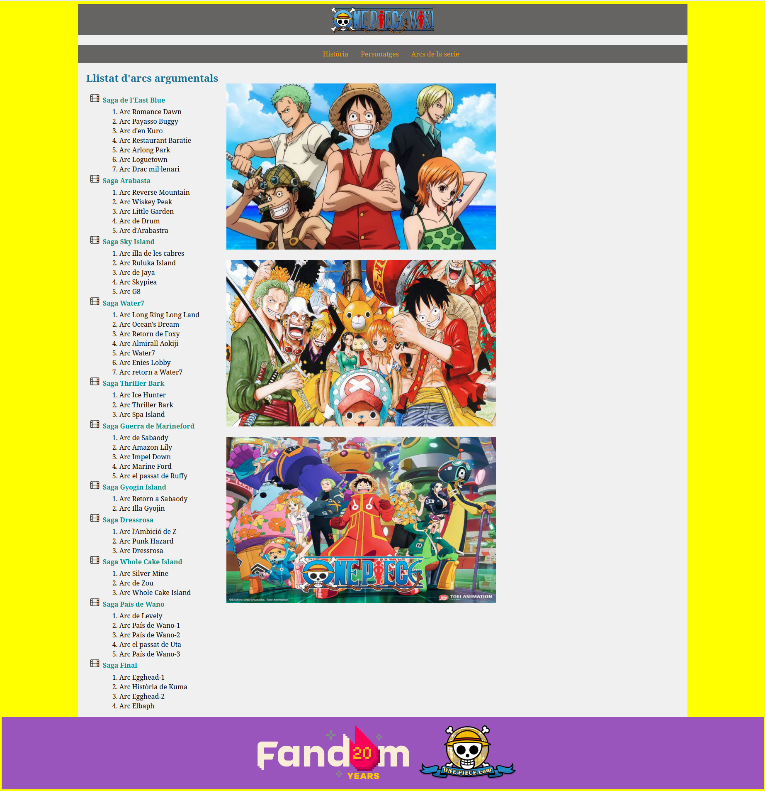
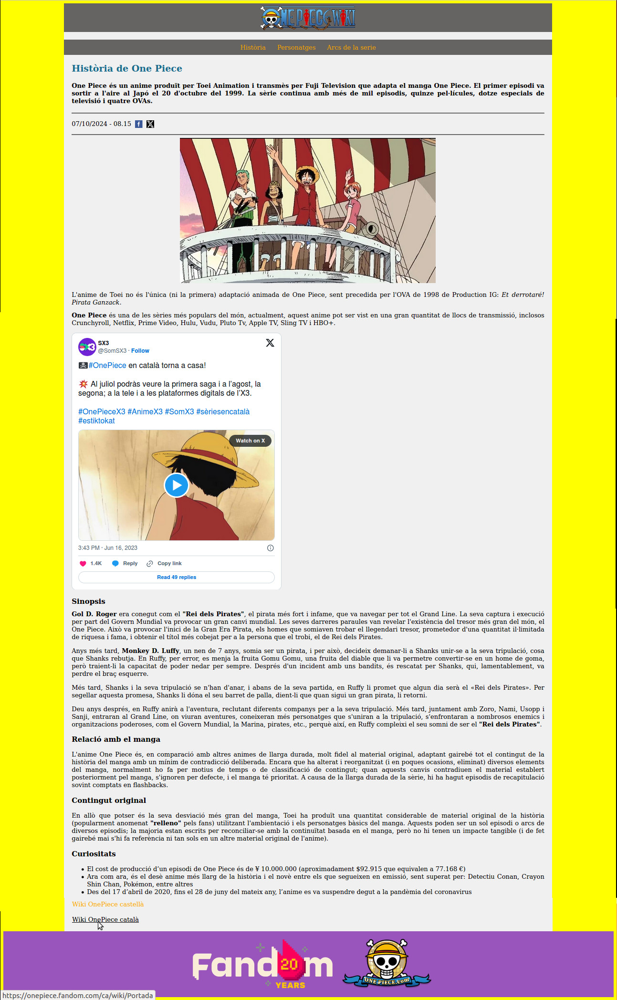
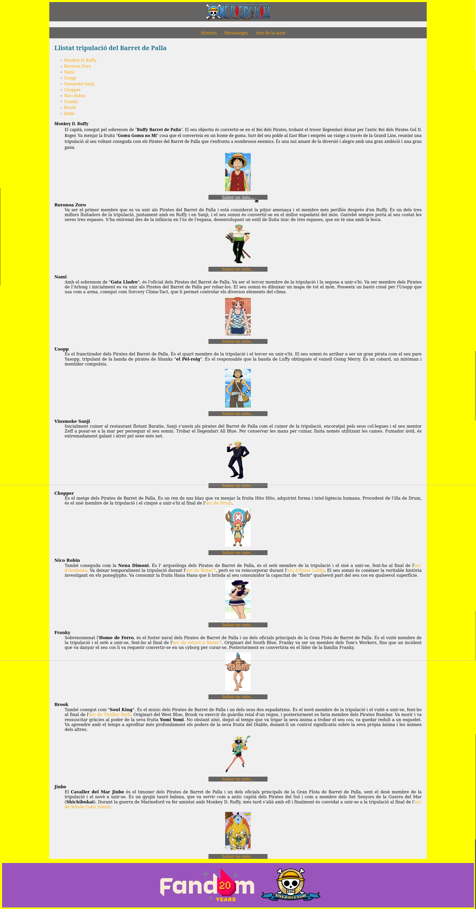

Llistat d'arcs argumentals
-
Saga de l'East Blue
- Arc Romance Dawn
- Arc Payaso Buggy
- Arc d'en Kuro
- Arc Restaurant Baratie
- Arc Arlong Park
- Arc Loguetown
- Arc Drac Mil·lenari
-
Saga Arabasta
- Arc Reverse Mountain
- Arc Whiskey Peak
- Arc Little Garden
- Arc de Drum
- Arc d'Arabasta
-
Saga Sky Island
- Arc illa de les cabres
- Arc Ruluka Island
- Arc de Jaya
- Arc Skypiea
- Arc G8
-
Saga Water7
- Arc Long Ring Long Land
- Arc Ocean's Dream
- Arc Retorn de Foxy
- Arc Almirall Aokiji
- Arc Water7
- Arc Enies Lobby
- Arc retorn a Water7
-
Saga Thriller Bark
- Arc Ice Hunter
- Arc Thriller Bark
- Arc Spa Island
-
Saga Guerra de Marineford
- Arc de Sabaody
- Arc Amazon Lily
- Arc Impel Down
- Arc Marine Ford
- Arc el passat de Ruffy
-
Saga Gyojin Island
- Arc retorn a Sabaody
- Arc Illa Gyojin
-
Saga Dressrosa
- Arc l'Ambició de Z
- Arc Punk Hazard
- Arc Dressrosa
-
Saga Whole Cake Island
- Arc Silver Mine
- Arc de Zou
- Arc Whole Cake Island
-
Saga País de Wano
- Arc del Levely
- Arc País de Wano-1
- Arc País de Wano-2
- Arc el passat de Uta
- Arc País de Wano-3
-
Saga Final
- Arc Egghead-1
- Arc Història de Kuma
- Arc Egghead-2
- Arc Elbaph


